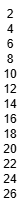
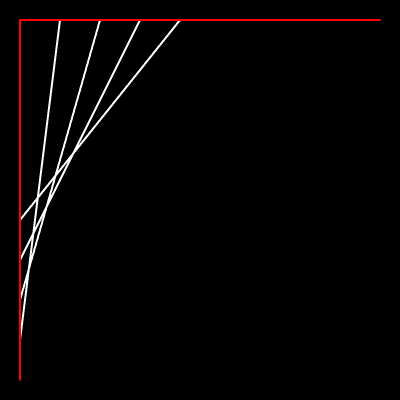
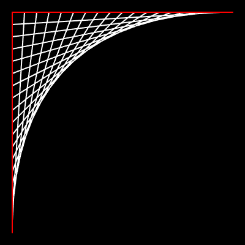
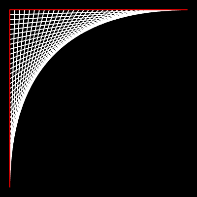
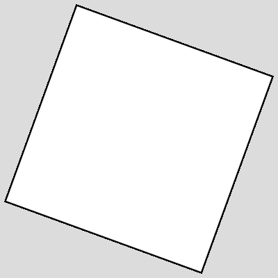
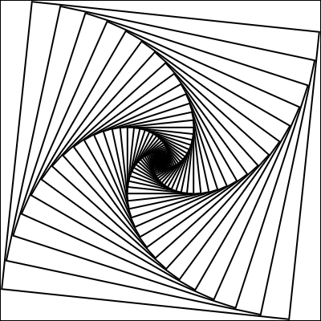
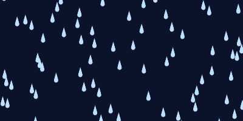
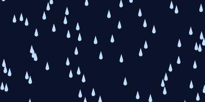

Open the Parallel Number Patterns Example, where you will see two loops:
for (let a = 2; a <= 10; a += 2) {
console.log(a);
}
for (let b = 10; b <= 14; b++) {
console.log(b);
}These two loops represent two different number patterns:
a variable starts at 2 and increases by 2 each step until it hits 10.b variable starts at 10 and increases by 1 each step until it hits 14.These loops are placed one after another, so when you run them you'll see them print out in this order:
2
4
6
8
10
10
11
12
13
14The focus of this assignment is to have two separate patterns that occur during the same loop, meaning we will want to be able to use a loop to print out:
2 10
4 11
6 12
8 13
10 14To do this, we are going to have to:
There are two ways to approach this:
a and control b manuallylet b = 10;
for (let a = 2; a <= 10; a += 2) {
console.log(a + " " + b);
b++;
}
Notice that the loop controlling a has not changed, but the b variable has been tacked on separately:
Notice that the initial value and incremental step are covered by this, but the boolean condition
(b <= 14) is ignored. The a variable is in charge.
b and control a manuallylet a = 2;
for (let b = 10; b <= 14; b++) {
console.log(a + " " + b);
a += 2;
}
This time the b loop is "in charge" and the a variable is being controlled separately.
It doesn't matter which of the two loops you use. The output will still show the same patterns.
Open the Parallel Number Patterns Questions and answer them. Each question deals with a parallel pattern, where a for loop controls one pattern, but a second pattern is manually controlled using a second variable.
Open the Count Up and Down workspace. There you are met with a line that will get a number from the user.
let max = Number(readLine("Enter the maximum value:"));Your task is to write a single loop that will print out two number patterns simultaneously:
For example, if the user enters 5 the output would be:
1 5
2 4
3 3
4 2
5 1And if the user enters 3 the output would be:
1 3
2 2
3 1Open the Number List workspace.
Your goal is to write a loop that will produce the following image:

There are two number patterns here:
y coordinate of the text goes from 15 to 195, counting by 15's.
Use the Parallel Number Patterns strategy to generate those two number patterns.
Each time, use a text() command to display the number at the generated y coordinate.
Open the String Art workspace.
There you will find the beginning of a line pattern:
line(20, 20, 20, 380);
line(60, 20, 20, 340);
line(100, 20, 20, 300);
line(140, 20, 20, 260);
line(180, 20, 20, 220);
Notice that each of these lines being drawn are a little different.
The first parameter (x1) is increasing by 20 each time, while simultaneously
the last parameter (y2) is decreasing by 20 each time.
Run the program and you'll see that it is the beginning of a pattern:

Your task is to delete the five calls to line() that are there and replace them with a loop
that generates these two patterns:
x1) goes from 20 to 380 counting by 20's.y2) goes from 380 to 20 decreasing by 20 each time.When completed properly, running the program should produce this image:

Once that is completed, modify the loop so that each of the values increases/decreases by 10 instead of 20, which should produce a tighter design:

Open the Square Spiral workspace in CodeHS. There your draw() function has been provided with some code that will draw squares using translate and rotate
translate(100,100);
rotate( 20 );
square( 0, 0, 150 );
resetMatrix();
This draws a square on the canvas, which:

Our goal is to generate the following design:

The key to this design is that there are many squares, each rotated to a different angle and with a slightly different size. There are two patterns to track with your loop:
Inside of the loop you should have all four of the provided lines: translate(), rotate(), square(), and resetMatrix(), but using your generated rotation angle and size. Leaving any of those lines outside of your loop will cause strange side effects. If done properly, running the program should result in the above design.
drop() Function
The drop() function's purpose is to draw a single raindrop at the x,y point provided
in the parameters (dX, dY). Getting the drop shape is accomplished by drawing many circles.
Each one a little bit lower (larger y) and with a slightly larger radius.
Implement the drop() function so that it generates two number patterns:
y coordinate that goes from dY to dY + 15, increasing by 1 each step.
Each iteration of the loop, draw a circle at dX with the generated y coordinate,
and the generated radius.
The draw() function currently has a single call to drop() to help with testing.
If done properly, running the program should produce the following:

Now that the drop() function will draw a raindrop at any given x,y coordinate,
it's time to modify the draw() function to draw many raindrops on the screen.
Replace the current call to drop(200, 90) with a loop that will generate y values
from -20 to 220, increasing by 3 each time.
Each time the loop iterates, it should generate a random x value from 0 to 400 and call
the drop() function using that x and the generated y value as parameters.
Run your program. Since randomSeed(1) is being called, the random numbers will always end up the same.
You should get the following output:

To give the rain a falling motion we are going to modify their y coordinate by frameCount,
which is always increasing. In order to stop the drops from going off of the bottom of the screen we are going to use
mod, whose effect is to make any numbers past a certain y coordinate "wrap" back around to 0.
Your draw() function may currently have a call along the lines of:
drop(x, y);Modify it to have the same x, but with a modified y:
drop(x, (y + frameCount) % 220 - 20);
This will cause the y coordinate to increase by 1 for each frame, but mod 220 means that any time
the value hits 220 it will be set back to 0. This causes a looping effect where the drops that go off the bottom
of the screen will be reset to the top.